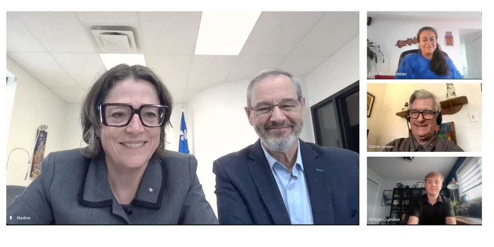

Rencontre bilatérale avec Nadine Le Gal, députée de Blainville, et Sylvain Pagé
Le 6 novembre 2026, William Guindon a tenu une séance de travail bilatérale approfondie avec la nouvelle députée de la circonscription de Blainville à l'Assemblée nationale du Québec, Nadine Le Gal, et Sylvain Pagé. Témoignant d'un sens aigu de l'écoute citoyenne, la députée a tenu cet échange avant même d'avoir ouvert son bureau de circonscription permanent.
Délégation & Participants à la table de travail
Les 5 avancées majeures et orientations arrêtées
Nadine Le Gal a formellement réaffirmé que la sauvegarde de la Grande Tourbière de Blainville et l'examen critique des activités d'enfouissement de Stablex constituent la priorité numéro un de son mandat de circonscription. La députée a manifesté une écoute rigoureuse face aux 222 pièces probatoires versées au registre public.
Au cœur des propositions réglementaires et économiques, la délégation a exposé la mise en place d'une éco-redevance dissuasive de 1 000 $ par tonne sur l'enfouissement des déchets toxiques industriels. Cette mesure vise à mettre fin au statut de dépotoir à bas coût de Blainville, à décourager les transferts transfrontaliers et à forcer la décontamination à la source.
Les échanges ont permis de réexaminer l'injustice démocratique de la Loi 93 québécoise, imposée sous bâillon parlementaire pour forcer l'expropriation municipale contre le verdict unanime du rapport BAPE 371. La députée s'est également montrée très critique de la posture du gouvernement fédéral à la CCE, qui refuse de répondre sur le cadmium (320x la norme) pour s'abriter derrière une échappatoire procédurale.
La rencontre a débouché sur des étapes opérationnelles précises : des initiatives parlementaires planifiées en décembre 2026 en synchronisation avec l'échéance internationale de la CCE, la mise sur pied d'un Conseil consultatif / comité de suivi permanent en janvier 2027, et la convocation prochaine d'une séance de travail bilatérale élargie.
La députée a salué l'autonomie et la rigueur de la relève citoyenne et a confirmé son souhait d'associer la jeunesse aux enjeux d'avenir de la circonscription. La présence à la table d'Édith Mora Castelan, experte citoyenne et vigie de terrain en gestion des matières résiduelles, a permis d'approfondir les impératifs de conformité environnementale et de protection rigoureuse du bassin hydrographique de la tourbière.